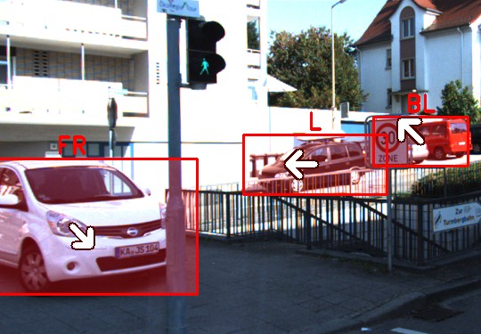
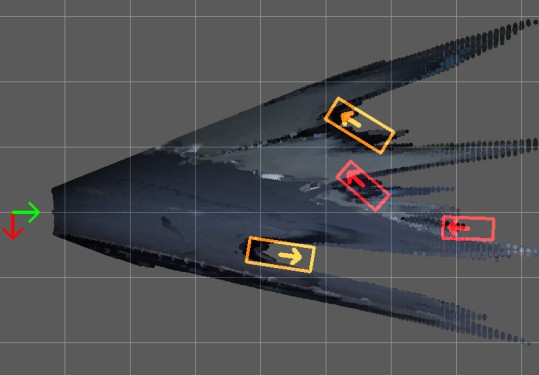
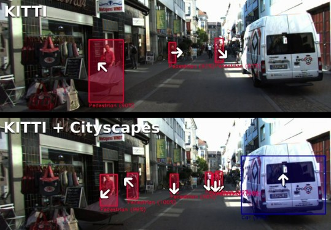
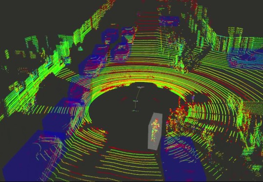
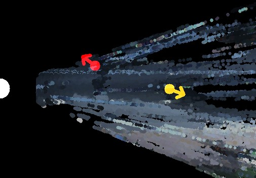
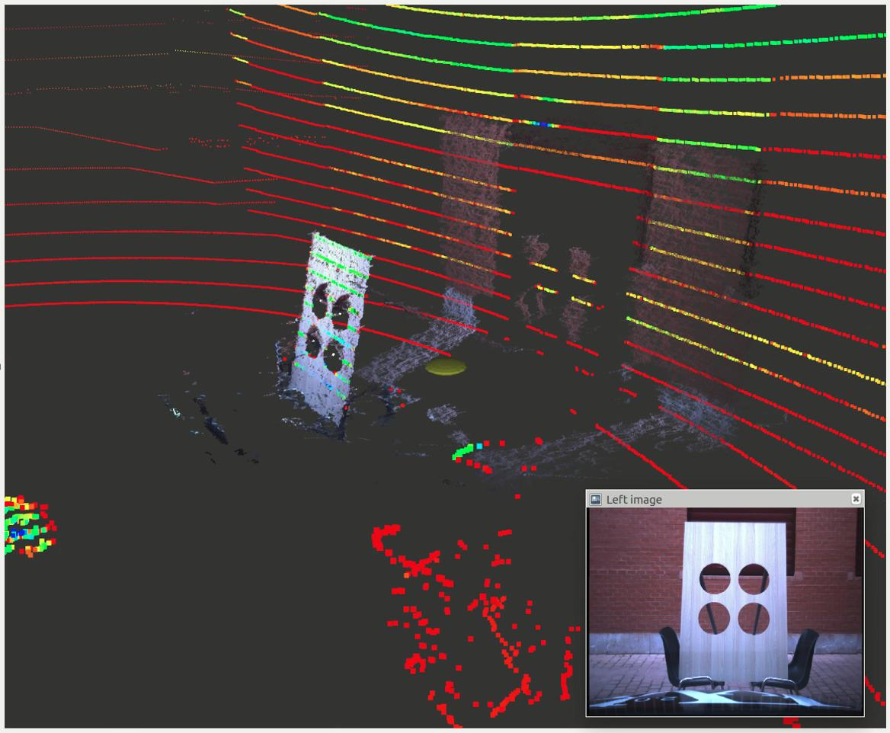
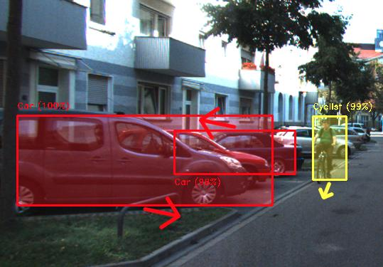
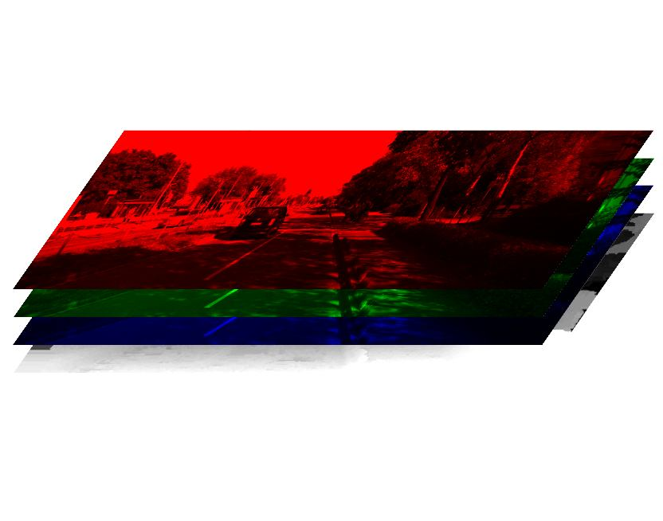
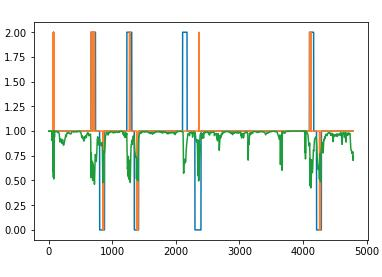
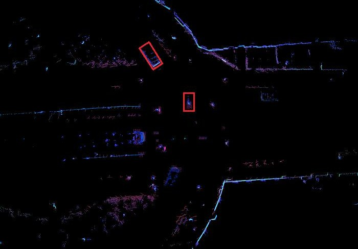

Unless otherwise specified, every content linked from here is licensed under a Creative Commons Attribution-ShareAlike 4.0 International License
Page design borrowed from here
Intelligent Systems Laboratory · Universidad Carlos III de Madrid
Contactc...@ing.uc3m.es
arXiv / Google Scholar / LinkedIn / GitHub|  |
Fast Joint Object Detection and Viewpoint Estimation for Traffic Scene Understanding Carlos Guindel, David Martín, José María Armingol IEEE Intelligent Transportation Systems Magazine 10(4), 2018 Paper (IEEEXplore) · Bibtex |
|  |
Traffic Scene Awareness for Intelligent Vehicles using ConvNets and Stereo Vision Carlos Guindel, David Martín, José María Armingol Robotics and Autonomous Systems 112, 2019 Paper (ScienceDirect) · Bibtex |
|  |
Analysis of the Influence of Training Data on Road User Detection Carlos Guindel, David Martín, José María Armingol, Christoph Stiller IEEE International Conference on Vehicular Electronics and Safety (ICVES), 2018 Paper (IEEEXplore) · Slides · Video (Youtube) · Bibtex |
|  |
BirdNet: A 3D Object Detection Framework from LiDAR Information Jorge Beltrán, Carlos Guindel, Francisco M. Moreno, Daniel Cruzado, Fernando García, Arturo de la Escalera International Conference on Intelligent Transportation Systems (ITSC), 2018 Paper (IEEEXplore) · Video (Youtube) · Bibtex |
|
A Deep Analysis of the Existing Datasets for Traffic Light State Recognition Carlos Fernández, Carlos Guindel, Niels-Ole Salscheider, Christoph Stiller International Conference on Intelligent Transportation Systems (ITSC), 2018 Paper (IEEEXplore) · Bibtex |
|  |
Modeling Traffic Scenes for Intelligent Vehicles Using CNN-Based Detection and Orientation Estimation Carlos Guindel, David Martín, José María Armingol ROBOT 2017: Third Iberian Robotics Conference, 2017 Paper (AISC) · Paper (preprint) · Slides · Bibtex Check also the extended version published in the RAS journal |
|  |
Automatic Extrinsic Calibration for Lidar-Stereo Vehicle Sensor Setups Carlos Guindel, Jorge Beltrán, David Martín, Fernando García IEEE International Conference on Intelligent Transportation Systems (ITSC), 2017 Paper (IEEEXplore) · Paper (arXiv) · Slides · ROS Package · Code (Github) · Video (Youtube) · Bibtex |
|  | Joint Object Detection and Viewpoint Estimation using CNN Features Carlos Guindel, David Martín, José María Armingol IEEE International Conference on Vehicular Electronics and Safety (ICVES), 2017 Paper (IEEEXplore) · Paper (preprint) · Slides · KITTI train/val split · Code (Github) · Results (KITTI) · Bibtex Check also the extended version published in the ITS Magazine |
|  | Stereo Vision-Based Convolutional Networks for Object Detection in Driving Environments Carlos Guindel, David Martín, José María Armingol International Conference on Computer Aided Systems Theory (EUROCAST), 2017 Ext. Abstract (p. 288-289) · Paper (LNCS) · Paper (preprint) · Slides · Code (Github) · Video (Youtube) · Bibtex |
|  | Entry for the IEEE ITS DM Hackathon (2017) First Intelligent Transportation Systems Data Mining Hackathon Finished in 6th place out of 23 participants. +info · Competition paper (ITSM - IEEEXplore) · Code |
|  | Entry for the Udacity-Didi Self-Driving Car Challenge (2017) Part of the Intelligent Systems Lab (LSI) - UC3M team Finished in 15th place out of 29 teams at the final round. +info · Code · Video (Youtube) Our solution subsequently led to BirdNet |